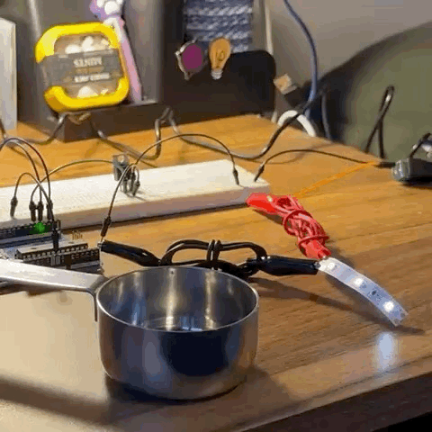
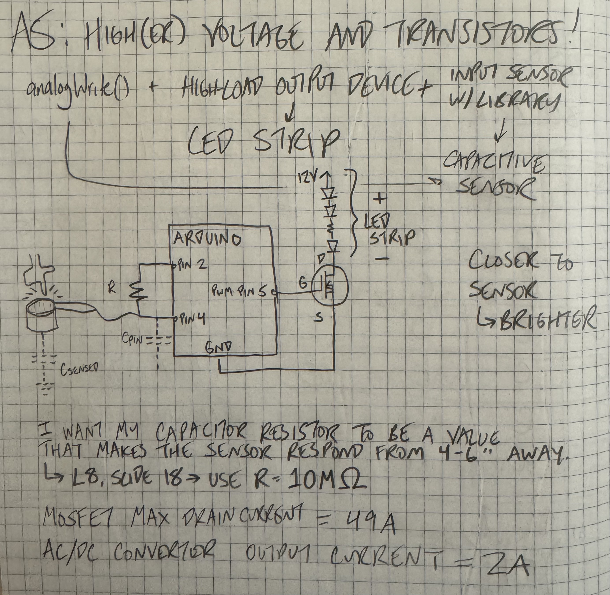
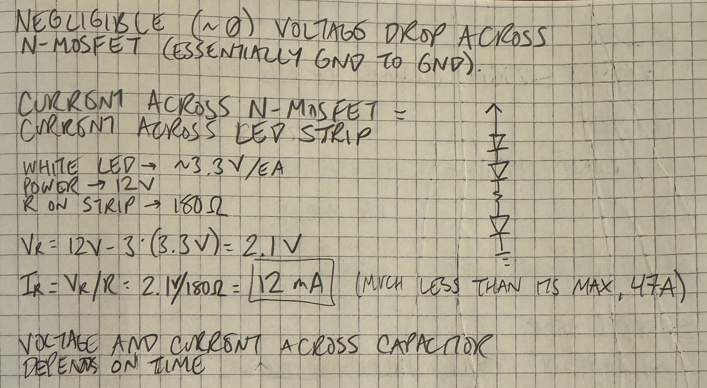
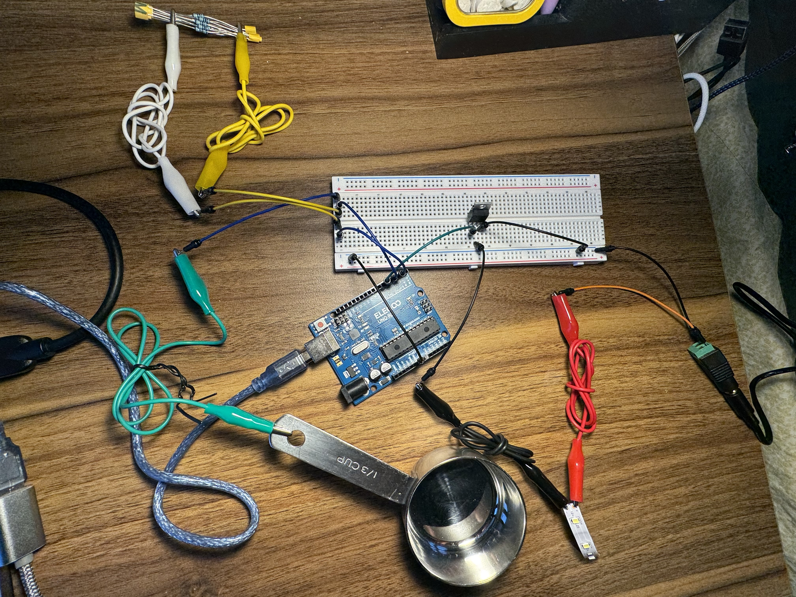
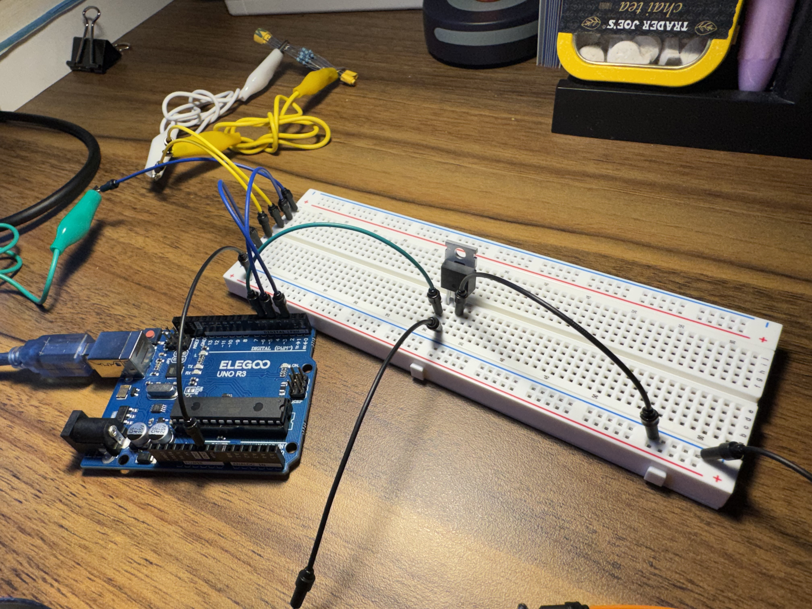
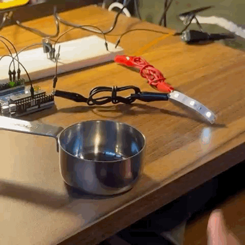
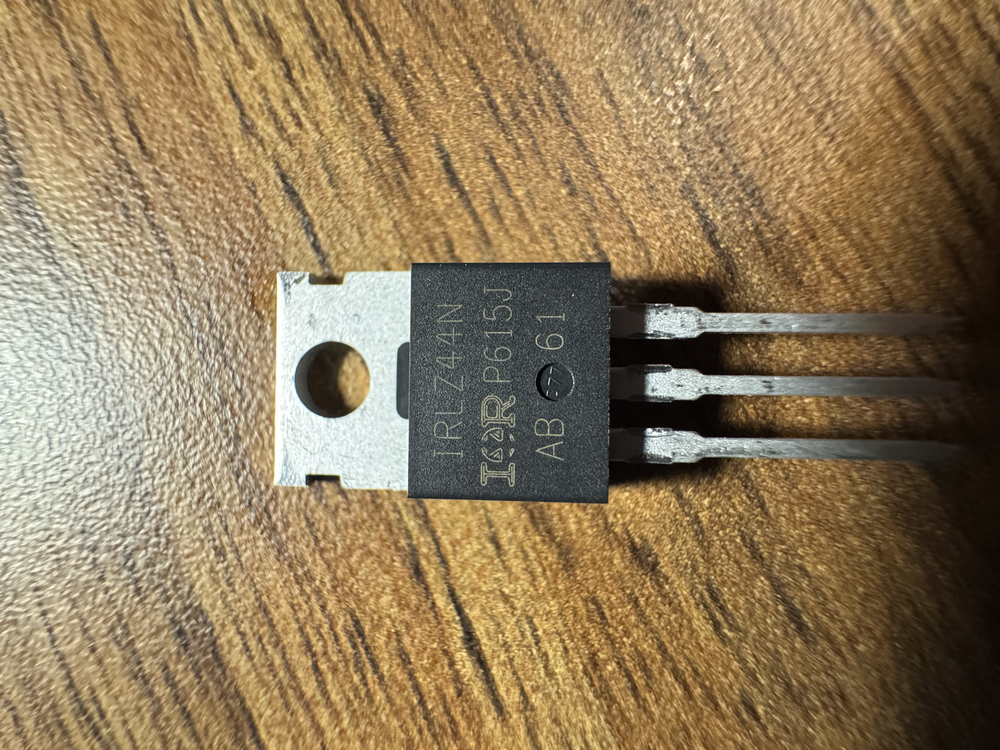
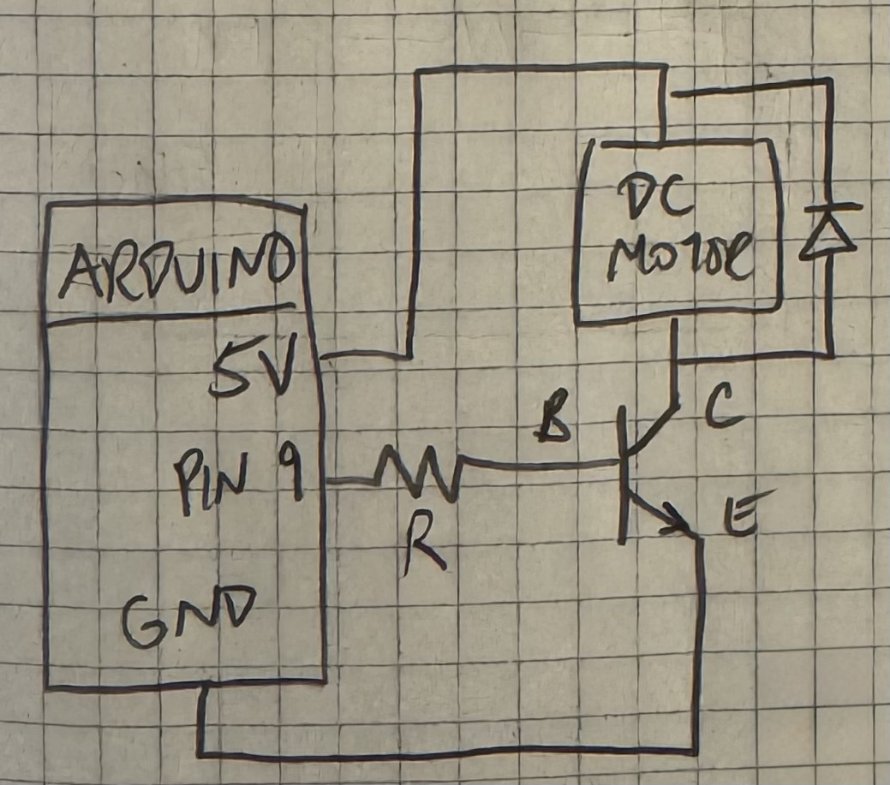
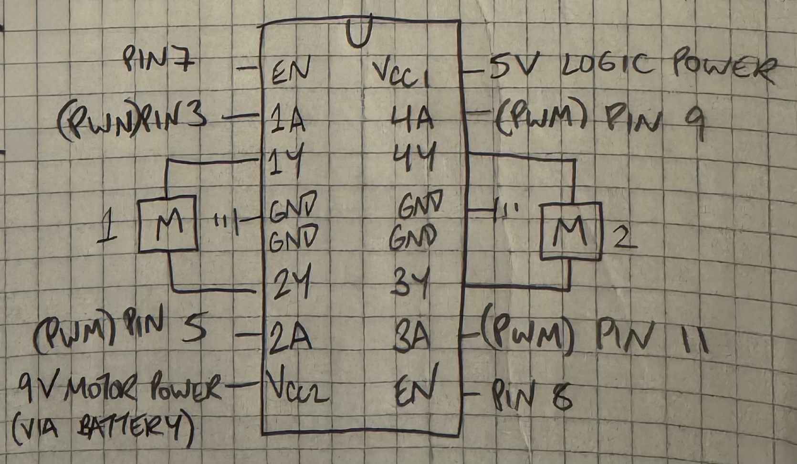
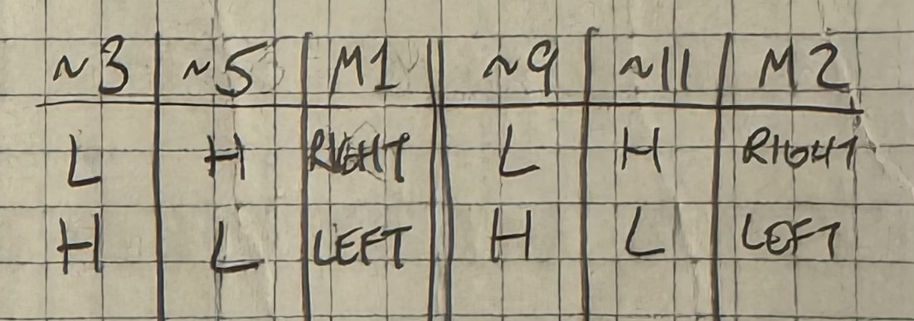

"You will create a schematic, circuit, and code that uses a transistor to control load power separate from logic power. You have to use analogWrite(), a high-load output device, and an input sensor that uses a library. Document your project on your webpage."
For my input sensor (with a library), I wanted to use a capacitive sensor (my handy dandy 1/3 measuring cup). For my high-load output device (to which I would later analogWrite()), I wanted to use an LED strip.
I drew a schematic to visualize the circuit system. To calculate the capacitor resistor value, I referenced Lesson 8. On slide 18, we are instructed to use a 10MΩ resistor for the sensor to respond from 4-6" away.


I built my circuit using:


I then wrote code so the LED strip would shine brighter when I was closer to the measuring cup.
// capacitive sensor library
#include <CapacitiveSensor.h>
// set up the Capacitive sensor with a send and recieve pin
CapacitiveSensor cs_s2_r4 = CapacitiveSensor(2,4); // first param is send, second is receive
// set up LED strip pin
const int ledPin = 5;
// capacitor variables
int capSensor = 0; // capacitor sensor value
int capSensorMin = 0; // min capacitor sensor value
int capSensorMax = 0; // max capacitor sensor value
// LED variable
int brightness = 0;
void setup() {
// put your setup code here, to run once:
cs_s2_r4.set_CS_AutocaL_Millis(0xFFFFFFFF); // turn off autocalibrate on channel 1 - just as an example
pinMode(ledPin, OUTPUT); // set up LED brightness PWM pin
Serial.begin(9600); // begin Serial communication to print values
// turn on LED to signal the start of the calibration
pinMode(LED_BUILTIN, OUTPUT);
digitalWrite(LED_BUILTIN, HIGH);
capSensorMin = capSensor; // make sure nonzero so it can ramp up
// calibrate during the first ten seconds
// (touch and then go far away repeatedly to get measurements)
while (millis() < 10000) {
capSensor = cs_s2_r4.capacitiveSensor(30); // call the function to get the capacitive sensor value with 30 samples
// record the maximum sensor value
if (capSensor > capSensorMax) {
capSensorMax = capSensor;
}
// record the minimum sensor value
if (capSensor < capSensorMin) {
capSensorMin = capSensor;
}
}
// print values to serial monitor for recordkeeping
Serial.print("Max capacitor value: ");
Serial.println(capSensorMax);
Serial.print("Min capacitor value: ");
Serial.println(capSensorMin);
// signal the end of the calibration
digitalWrite(LED_BUILTIN, LOW);
}
void loop() {
// read the sensor
capSensor = cs_s2_r4.capacitiveSensor(30);
// in case the sensor value is outside the range seen during calibration
capSensor = constrain(capSensor, 0, 1023);
// map the sensor values to analog write values
brightness = map(capSensor, capSensorMin, capSensorMax, 3, 200); // 3 to reduce flicker; 200 to not burn my corneas out
// the LED strip brightness should correspond with how close i am to the sensor
analogWrite(ledPin, brightness);
}
I uploaded my code and got in touch with my new higher power!

1: These are the datasheets for the n-mosfet transistor: DMT6009LCT, IRLZ44N, P30N06LE. Read the text on your mosfet to see which one you have. For your mosfet, what is the absolute maximum amount of current between pins 2 and 3?

I have the IRLZ44N N-MOSFET transistor. The absolute max current between pins 2 and 3 (drain and source) is also known as the continuous drain current. The max varies at different temperatures. At 25˚C (closer to my room's temperature), the maximum current is 47A (a lot)!2: Draw a schematic for a circuit with using at least your arduino, a DC motor, and a flyback diode. Find parts with datasheets you could use for each of these schematic components.

To make this circuit, I could use components from my kit:3: Here is the datasheet for the L293D chip: https://www.ti.com/product/L293D. Draw a schematic using at least your arduino, this chip, and two motors. Write (pseudo) code that shows how you would move the motors both forward, both back, then one forward one back, and one back then forward.

The datasheet tells me that if I write HIGH and LOW to the pins, each motor M1 and M2 will spin in the directions listed below. (Ex: ~3 HIGH + ~5 LOW = M1 turns left.)
4: Did you use AI tools in completing this assignment? If yes, please provide details on how/when, as well as a brief reflection. If you used an LLM, please 'share' your conversation and include it as part of your submission, or cite the prompt(s) you used and the output. If no, you can either leave this question blank, or provide other information if you'd like.
I used AI for one thing: to clean up images. When I did my calculations in my notebook, they kind of overlapped. I used Apple Intelligence in Photos ("Clean Up") to get rid of any extraneous pencil lines.